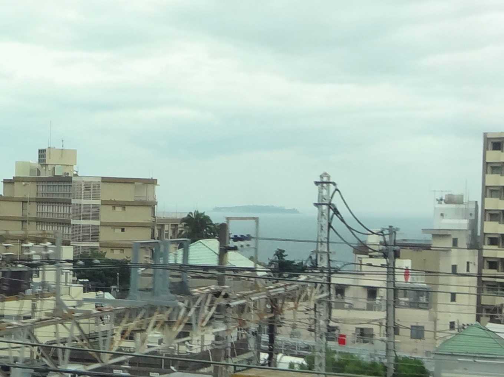
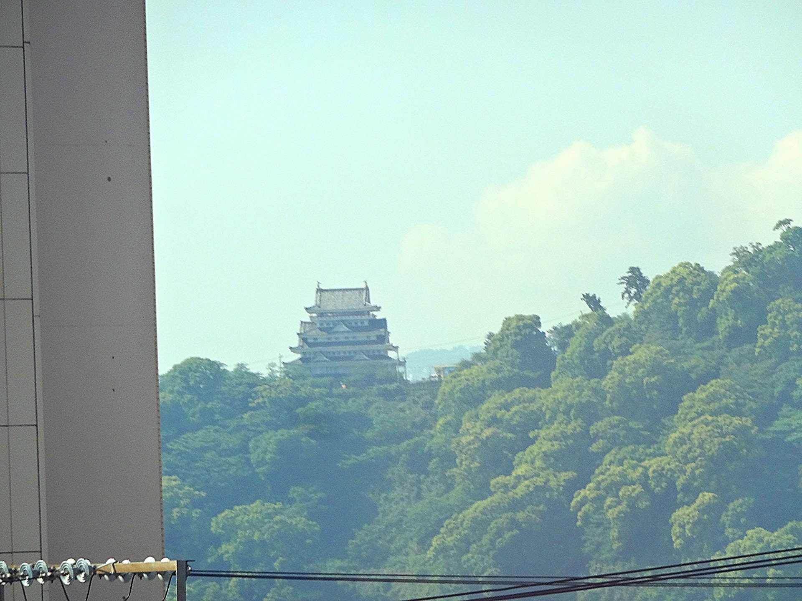

TOKAIDO SHINKANSEN WINDOW VIEW
Can you see Atami & Sagami Bay from the Shinkansen?
Where the sea begins.

- Section
- Odawara → Atami
- Seat side
- Seat A · sea side
- Timing
- About 36 minutes after leaving Tokyo on a Nozomi train
- Photos
- 3 photos
How to find Atami & Sagami Bay
After Odawara, as Atami approaches, the window opens wide toward Sagami Bay. Hillside town, sea and headlands fold into one view: the moment the ride stops being a commute and starts being a journey. Look from Seat A.
If you are traveling from Tokyo toward Shin-Osaka, start watching the Seat A · sea side window as you approach Odawara → Atami. If you are traveling toward Tokyo, the order is reversed.
Why this view matters
Atami & Sagami Bay is one of the window views that make the Tokaido Shinkansen more than a transfer. The train moves fast, so visibility depends on weather, seat position, and timing.
Atami & Sagami Bay in photos

